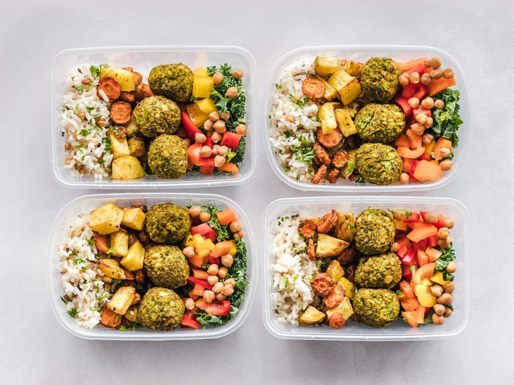

trucos para optimizar tu presupuesto alimentario mientras estudias

Photo: Ella Olsson / Pexels
Optimizar tu presupuesto alimentario es crucial, especialmente si estás en la etapa de estudios. En este artículo, te proporcionaremos cinco trucos eficaces y concretos que te ayudarán a manejar mejor tus gastos alimentarios y a ahorrar dinero sin renunciar a la calidad y variedad de tu alimentación.
1. Compra en temporada
La temporada de un producto influye directamente en su precio. Si compras frutas y verduras cuando están en temporada, generalmente obtendrás productos frescos a precios más bajos. Por ejemplo, si estás estudiando durante los meses de verano, aprovecha el aguacate, las fresas y las melones, que son frutas típicas de esta época.
2. Cocina en lote
Preparar comidas en lote puede ahorrarte mucho tiempo y dinero. Si dedicas 3 horas a cocinar una gran porción de comida, puedes guardarla en la nevera y repartirla durante una semana. Un ejemplo concreto: si preparas una gran olla de arroz con pollo y verduras una vez a la semana, podrás servirte de ella durante 5 días.
3. Utiliza ingredientes económicos
Incluye en tus recetas ingredientes económicos que se pueden combinar con otros más caros, de modo que disminuyas el coste total de la comida. Por ejemplo, las legumbres, como la lenteja o el garbanzo, son una gran opción económica y nutritiva que puedes combinar con carnes o pescados.
4. Evita las comidas fuera
Las comidas fuera son, generalmente, más caras que las preparadas en casa. Si estás en la universidad o en casa, trate de cocinar a menudo. Un día a la semana, puedes reservar un "día de comidas fuera" para ahorrar. Por ejemplo, si estudias de lunes a viernes, puedes reservar el sábado para cenar en el restaurante más cercano.
5. Planifica tus compras
Planificar tus compras puede ayudarte a evitar comprar cosas que no necesitas y a ahorrar dinero. Crea una lista de compras semanal y comprueba antes de salir si ya tienes algunos de los ingredientes en casa. Por ejemplo, si planeas hacer una ensalada todos los días, comprueba que tienes lechuga, tomates, cebolla y otros ingredientes necesarios.
Estos cinco trucos te permitirán optimizar tu presupuesto alimentario de manera efectiva, incluso si estás estudiando. Recuerda que la clave está en la planificación y el uso eficiente de los recursos. ¡Comienza hoy y verás cómo te resulta beneficioso!